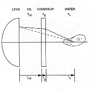
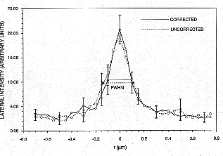

Optics Letters '95 Paper
The following has been reformatted
by the authors for electronic presentation, and is not in archival form.
The archival edition has been published in:
Optics Letters, Volume 20, Number 10, page 1213 (May 15, 1995)
NOTE: This publication uses html extensions which enhance its
presentation using the Netscape viewer.
Simple Binary Optical Elements for Aberration Correction
in Confocal Microscopy
Christian K. Sieracki, Christopher G. Levey, and Eric W. Hansen
Thayer School of Engineering, Dartmouth College,
8000 Cummings Hall, Hanover, New Hampshire 03755-8000
|
When a confocal fluorescence microscope with a high numerical aperture oil
immersion objective is focused deep into an aqueous medium, aberrations result
which degrade image quality. We have designed and fabricated a simple,
two-level binary phase mask which partially corrects these aberrations,
improving axial resolution. This letter presents the design and some
confirming results.
|

The high axial resolution of confocal microscopy has made it a popular tool for
constructing detailed three-dimensional (3D) images of microscopic structures.
For biological specimens, this frequently involves imaging deep inside an
aqueous medium with a high numerical aperture (NA) oil immersion objective lens
(Figure 1)
. When imaging a portion of the specimen near the coverslip, the
objective is operating in its design regime and the index mismatch between
coverslip and specimen medium is of little consequence. However, as the
microscope focuses deeper into the specimen, a non-negligible optical path
difference (OPD) results between on- and off-axis rays. Gibson and Lanni
[1]
have derived an expression for the OPD which, assuming that the most important
sources of aberration are specimen-glass index mismatch and deep focusing,
simplifies to:
(1)
where NA = numerical aperture of the objective lens; [[rho]] = normalized
radius in the lens aperture
; toil , noil , ts , ns = actual thickness and
refractive index of oil and specimen medium,
respectively; and toil* = oil thickness for which the lens was designed.
In practice, noil >ns, and the highest aperture waves will
fail to propagate, effectively limiting the NA of the lens to something less
than ns.
Aberrations induced by the optical path difference can exceed several waves at
the edge of the pupil and include polynomial terms as high as
[2].
This decreases image brightness and severely increases the axial width of the
the point spread function (PSF)[3-7]
Various approaches to correcting these aberrations have been suggested: (1)
Water-immersion objectives, designed to operate in an aqueous medium
[8]
are currently quite expensive, do not operate with all specimen mounting media
and fluorophores, and are hard to use in an inverted microscope. (2) A lens
with lower NA will also have less aberration, but collection efficiency is
reduced and the point spread is broadened. (3) Post-detection digital
restoration is characteristically sensitive to noise, particularly at the low
light levels characteristic of confocal fluorescence microscopy. (4) In some
systems the objective-detector distance may be adjusted
[6]
to introduce balancing aberrations that improve the PSF. The approach taken
here also introduces balancing aberrations, but allows for more degrees of
freedom in design.
We consider a phase mask for the objective pupil of the form
(i.e., misfocus + primary spherical aberration), fabricated as a two-level
binary optical element (0 and [[pi]]) by "wrapping" the phase at integer
multiples of 2[[pi]] and quantizing the result. The minimum feature size of
this binary element, calculated from the local spatial frequency of the phase
function, is
,
where a = radius of the
objective aperture stop. The spherical coefficient [[beta]] is chosen to
correct the third-order term of (1), and the misfocus coefficient [[gamma]] is
then adjusted to achieve a practical feature size. Mild residual focus offsets
are removed by an auxiliary lens in the scanning optics.
Figure 2 shows the
phase profile of ideal and two-level correcting elements designed for a 1.4 NA
objective lens focusing 40um into water.
We simulated the PSF of the confocal microscope with and without this corrector
using the standard model:
(2)
where p1 and p2 are the point spread functions of
the illumination lens and collecting lens, respectively, P3 is
the effective detector aperture, and ** indicates a 2D (lateral) convolution.
The collector lens PSF (propagation from the specimen to the detector plane) is accurately described by a Hankel transform,
(3)
where f = lens focal length, [[Phi]]([[rho]]) is the pupil phase
function, including aberrations and corrections, and
We also used this model for the illumination PSF p1; for our
purposes here it gives essentially the same results as more complex diffraction
calculations[3,7].
In the usual epi-fluorescence mode, the corrector is traversed in one
direction by the illumination light and in the reverse direction by the emitted
fluorescence. To model the return path, the corrector's dimensions were scaled
by [[lambda]]illum/[[lambda]]emission (e.g., [[lambda]]illum = 488 nm and
[[lambda]]emission = 535 nm); no significant degradation due to the wavelength
difference was seen.
Figure 3
shows that the full width at half maximum (FWHM)
of the image of a point object is predicted to improve by 40% to 50% over a
range from 20 um to 60 um depth, while the performance at 10 um is now degraded
relative to the uncorrected case.
An experimental phase mask was designed and printed from a personal computer
and reduced to actual size on microfiche by standard commercial processing.
Photolithography was performed using the microfiche as a contact mask. The
substrate was a soda-lime glass slide (Cat. No. 3051, Becton, Dickinson and
Co., Lincoln Park, NJ) with refractive index nglass =1.5 at 488 nm. The
minimum lateral feature size was 200 um and the step height for a half-wave
phase shift was 473 nm (for [[lambda]] = 488 nm). A timed wet etch process
using a solution of 5% HF in NH4F etched the soda-lime glass at 180 nm/min with
agitation. The completed mask was positioned at a plane conjugate to the
objective's aperture stop in a Zeiss IM-35 inverted microscope (Carl Zeiss,
Oberkochen, Germany) augmented for confocal scanning.
The test objects were 140 nm diameter polystyrene beads labeled with
fluorescein isothiocyanate (Cat. No. 17750, Polysciences, Inc., Warrington,
PA). The beads were suspended in methanol, deposited on microscope slides and
allowed to dry. Each slide was then prepared with a layer of water and a #1
coverslip, and the coverslip was sealed to the slide with fingernail polish
(Cover Girl Salon Solutions anti-chip topcoat was found to hold up well over
time).
The objective's focal position relative to the stage was adjusted by a
microstepping motor (Model M061-LF-408, Superior Electric, Bristol, CT)
attached to the microscope's fine focus knob, and monitored with an eddy
current sensor (Model KD-2810-1U, Kaman Instrumentation Corporation, Colorado
Springs, CO). The lateral (XY) scan was created by a galvanometer system
[9].
The focusing system was calibrated for refractive index mismatch using a slide
with a micro-etched well of known depth, filled with water and capped with a
coverslip. The change in observed focus (toil) from the top of the well
to the bottom was compared with its known depth. An empirical scale factor of
0.8 was determined, which agrees with theory
[7].
The depth of the beads was similarly measured by focusing first on the
coverslip/water interface and then on the beads, and scaling the observed
difference by 0.8. A preparation with 40 um bead depth was selected for
imaging.

Through-focus image series were taken with 50 nm lateral sampling and 200 nm
axial steps at the stage (160 nm in water). 25 x 25 um2 fields of
view were scanned with 100 uW input to a Zeiss 63x 1.4NA Plan-apo
objective for ca. 19 usec per pixel. Measurements taken with the corrector in
place were scaled by 1.23 to compensate for surface reflection losses.
Profiles of several bead images were measured, aligned, and averaged.
Figure 4
shows that the corrector makes little difference in the lateral profile.
On the other hand,
Figure 5 displays a significant axial improvement. The
measured FWHM (at the stage) of the axial bead images is reduced by
approximately 50% from ca. 1.5 um to ca. 0.7 um, which agrees with theory (1.58
um and 0.77 um, respectively) within the 200 nm axial step size.
We found that a very simple two-level phase mask, designed to correct only
primary spherical aberration, made significant improvements in the axial
response of a confocal microscope working deep in an aqueous preparation. The
two level mask was fabricated using rudimentary graphics, photolithography and
wet chemical etching; a mask aligner was not required. A series of three or
four such elements designed for different specimen depths would be needed to
cover a wide axial range. We are currently investigating designs with more
phase levels and higher order corrections.
The support of the National Institutes of Health, grant RO1-GM36594 is
gratefully acknowledged. The authors also thank Ken Orndorff for his assistance
in specimen preparation.
References
1. S. F. Gibson and F. Lanni, J. Opt. Soc. Am. A 8, 1601 (1991).
2. S. F. F. Gibson, "Modeling the Three Dimensional Imaging Properties of the
Fluorescence Light Microscope," Ph.D. dissertation (Carnegie-Mellon University,
1990).
3. H. T. M. van der Voort and G. J. Brakenhoff, J. Microsc. 158, 43
(1990).
4. K. Carlsson, J. Microsc. 163, 167 (1991).
5. C. J. R. Sheppard and M. Gu, Appl. Opt. 30, 3563 (1991).
6. C. J. R. Sheppard and M. Gu, Opt. Commun. 88, 180 (1992).
7. S. Hell, et al., J. Microsc. 169, 391 (1993).
8. M. Brenner, American Laboratory 26, 14 (1994).
9. E. W. Hansen, J. P. Zelten and B. A. Wiseman, in Time-Resolved Laser
Spectroscopy in Biochemistry, J. R. Lakowicz, ed. Proc. SPIE 909,
304 (1988).
You are viewer number  since January 1, 1996
since January 1, 1996